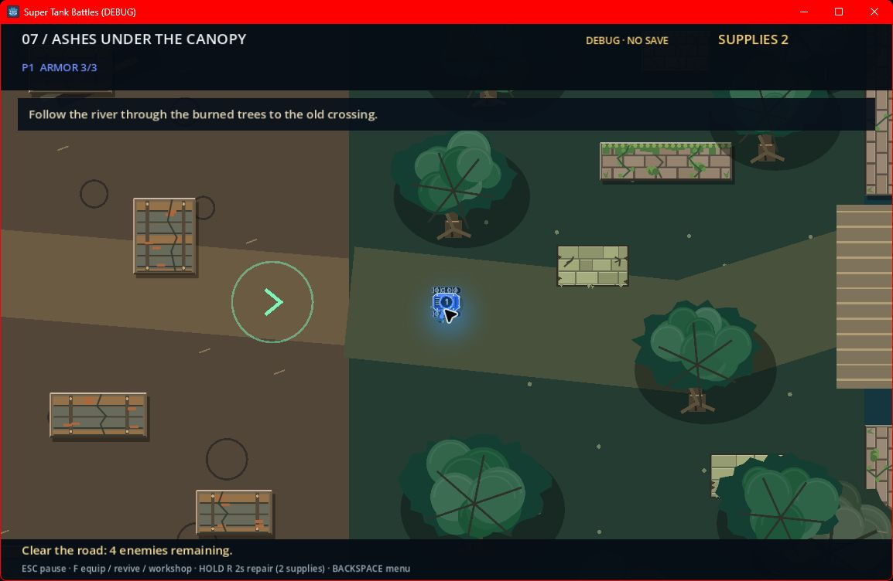

Super Tank Battles
A tank game with 50 mission scenes, procedural duel arenas, and a cooperative story mode for up to four local players.
- Built graph-based navigation and predictive ricochet aiming.
- Implemented checkpoint persistence and regression scripts for combat, layouts, progression, and co-op play.